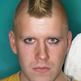
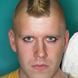

About the event
The Roux Academy’s annual conference and exhibit is designed to foster a close-knit relationship amongst artists at various universities around the world. But sign up early, as this not-to-miss conference sells out quickly, and the waiting list is long. In addition, art students are encouraged to send in works from their school portfolios to be considered for hanging in the CAC exhibit halls, as well as to be selected as a Featured Artist.
Featured artists
The Roux Academy selects approximately 200 distinct pieces of contemporary art for display in their collective exhibit. Nine individuals are granted his or her own exhibit hall to display entire collections or themed pieces. Each Featured Artist has an opportunity to speak at the conference to share his or her vision, perspective, and techniques with conference attendees.


 


The venue
Hotel Contempo

CAC speaking events and gallery exhibits take place inside Hotel Contempo, at 309 1st Avenue, in Downtown Seattle. Just a walk to the Space Needle, and a sampling of restaurants and shopping makes the venue a much sought-after location for conferences, year after year. Hotel Contempo is the perfect spot for a gathering of modern artists. Not only are the conference rooms and halls decked with breathtaking contemporary art and sculptures, but the individual rooms are as unique as the renowned artists who were commissioned to decorate them. From the Ross Monroe Purple suite filled wall to wall with paintings to the Tess Lessinger Sculpted Universe suite, with dozens of original sculptures, visitors are sure to be intrigued and comforted during their stay at Hotel Contempo.